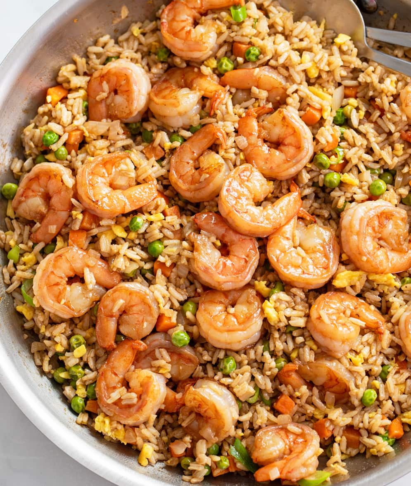

Alaska's Fried Rice

Description
Shrimp fried rice is a popular and delectable dish that showcases the harmonious blend of savory flavors and delightful textures. Originating from Chinese cuisine, this dish has become a global favorite, appreciated for its simplicity and versatility. The key components include succulent shrimp, cooked rice, and an array of colorful vegetables such as peas, carrots, and green onions. The ingredients are stir-fried together in a wok or skillet, allowing the flavors to meld and the rice to absorb the savory essence of soy sauce and other seasonings. The shrimp add a sweet and briny element, elevating the dish to a delightful level of sophistication. Each bite offers a medley of tastes, from the tender shrimp to the slightly crispy rice, creating a satisfying and well-balanced culinary experience.
Shrimp fried rice is not only a delicious dish but also a practical and efficient way to repurpose leftover rice. Its adaptability allows for various additions like scrambled eggs, diced ham, or tofu, making it a versatile choice for those looking to customize their meal. Whether enjoyed as a quick weeknight dinner or as part of a festive spread, shrimp fried rice stands out as a flavorful and comforting option, appreciated by both seafood enthusiasts and fans of Asian cuisine worldwide.
Ingredients
- 2 cups cooked white rice (preferably chilled)
- 1/2 pound (about 225g) medium shrimp, peeled and deveined
- 2 tablespoons vegetable oil
- 1 cup mixed vegetables (peas, carrots, corn), thawed if frozen
- 2 cloves garlic, minced
- 2 eggs, beaten
- 3 tablespoons soy sauce
- 1 tablespoon oyster sauce
- 1/2 teaspoon sesame oil
- Salt and pepper to taste
- 2 green onions, thinly sliced (for garnish)
Steps
- Heat 1 tablespoon of vegetable oil in a large wok or skillet over medium-high heat.
- Add the shrimp and cook until pink and opaque, about 2-3 minutes. Remove shrimp from the pan and set aside.
- In the same pan, add the remaining tablespoon of oil. Add minced garlic and sauté until fragrant.
- Add mixed vegetables to the pan and stir-fry until they are tender-crisp.
- Push the vegetables to the side of the pan and pour the beaten eggs into the empty space. Scramble the eggs until cooked through.
- Add the cooked rice to the pan, breaking up any clumps and mixing it with the vegetables and eggs.
- Return the cooked shrimp to the pan.
- Drizzle soy sauce, oyster sauce, and sesame oil over the rice. Stir well to combine and season with salt and pepper to taste.
- Cook for an additional 2-3 minutes until everything is heated through.
- Garnish with sliced green onions and serve hot.